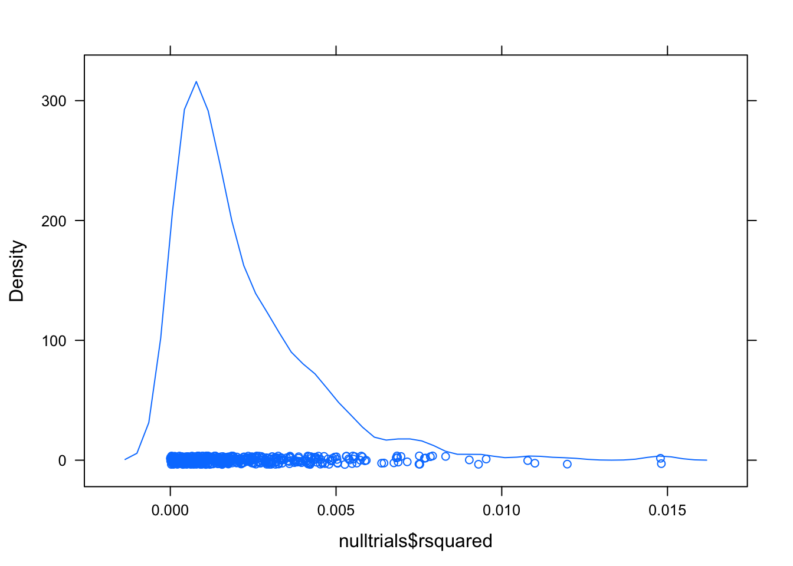
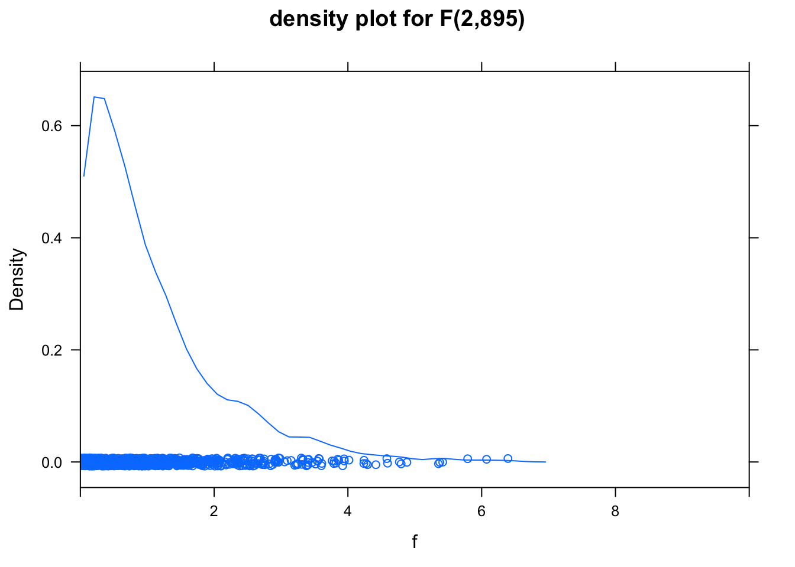

Chapter 14 Testing whole models
require(mosaic) # mosaic operators and data will be used in this sectionThe chapter presents two ways of doing hypothesis tests on whole models: (1) permutation tests where the connection is severed between the explanatory and response variables, (2) tests such as ANOVA where the sampling distribution is calculated from first principles. In practice, first-principle tests are used most of the time. Still, the permutation test is useful for developing intuition about hypothesis testing — our main purpose here — and for those not-so-rare occasions where the assumptions behind the first-principle tests are dubious.
14.1 The Permutation Test
The idea of a permutation test is to enforce the null hypothesis that there is no connection between the response variables and the explanatory variables. An effective way to do this is to randomize the response variable in a way that is consistent with sampling variability. When constructing confidence intervals, the resample() function was used. Re-sampling will typically repeat some cases and omit others. Here, the shuffle() function will be used instead, to scramble the order of one or more variables while leaving the others in their original state.
To illustrate, consider a model for exploring whether sex and mother’s height are related to the height of the child:
G <- Galton # from mosaicData
mod <- lm( height ~ sex + mother, data = G)
coefficients(mod)## (Intercept) sexM mother
## 41.4495235 5.1766949 0.3531371The coefficients indicate that typical males are taller than typical females by about 5 inches and that for each inch taller the mother is, a child will typically be taller by 0.35 inches.
A reasonable test statistic to summarize the whole model is \(R^2\):
rsquared(mod)## [1] 0.5618019For confidence intervals, re-sampling was applied to the entire data frame. This selects random cases, but each selected case is an authentic one that matches exactly the original values for that case. The point of re-sampling is to get an idea of the variability introduced by random sampling of authentic cases.
do(5) * lm( height ~ sex + mother, data = resample(G))## Intercept sexM mother sigma r.squared F numdf dendf .row .index
## 1 42.62282 5.198677 0.3344904 2.357899 0.5689608 590.6887 2 895 1 1
## 2 41.33571 5.167612 0.3528718 2.347953 0.5587133 566.5800 2 895 1 2
## 3 40.63105 5.166878 0.3651324 2.310658 0.5821128 623.3632 2 895 1 3
## 4 39.34922 5.110852 0.3869812 2.368210 0.5574939 563.7855 2 895 1 4
## 5 37.85104 5.312496 0.4077655 2.416791 0.5631884 576.9692 2 895 1 5The sex M coefficients are tightly grouped near 5 inches, the mother coefficients are around 0.3 to 0.4.
In order to carry out a permutation test, do not randomize the whole data frame. Instead, shuffle just the response variable:
do(5) * lm( shuffle(height) ~ sex + mother, data = G)## Intercept sexM mother sigma r.squared F numdf dendf .row .index
## 1 66.43890 0.26931216 0.00284531 3.584389 0.0014106973 0.6321789 2 895 1 1
## 2 65.95435 0.10753345 0.01171354 3.586428 0.0002739812 0.1226402 2 895 1 2
## 3 68.23226 0.07942871 -0.02360484 3.586263 0.0003658552 0.1637801 2 895 1 3
## 4 63.22838 -0.03380593 0.05539274 3.584576 0.0013063829 0.5853711 2 895 1 4
## 5 67.93034 -0.15586484 -0.01699231 3.585887 0.0005757963 0.2578173 2 895 1 5Now the sex M and mother coefficients are close to zero, as would be expected when there is no relationship between the response variable and the explanatory variables.
In constructing the sampling distribution under the null hypothesis, you should do hundreds of trials of fitting the model to the scrambled data, calculating the test statistic (\(R^2\) here) for each trial. Note that each trial itself involves all of the cases in your sample, but those cases have been changed so that the shuffled variable almost certainly takes on a different value in every case than in the original data.
nulltrials = do(500) * rsquared(
lm(shuffle(height) ~ sex + mother, data = G))Notice that the rsquared() operator has been used to calculate the test statistic \(R^2\) from the model. The output of do() is a data frame:
head(nulltrials)## rsquared
## 1 0.0022598018
## 2 0.0003179839
## 3 0.0010647410
## 4 0.0050407000
## 5 0.0047568723
## 6 0.0006001192Naturally, all of the \(R^2\) values for the trials are close to zero. After all, there is no relation between the response variable (after randomization with shuffle()) and the explanatory variables.
The p-value can be calculated directly from the trials, by comparison to the observed value in the actual data: \(R^2\) was 0.5618.
tally(nulltrials$rsquared > 0.5618)##
## TRUE FALSE
## 0 500None of the 500 trials were greater than the value of the test statistic, 0.5618. It wouldn’t be fair to claim that \(p=0\), since we only did 500 trials, but it is reasonable to say that the permutation test shows the p-value is \(p \leq 1/500\).
For interst’s sake, have a look at the null distribution for \(R^2\):
densityplot(nulltrials$rsquared)
These values are a long way from 0.5618. The p-value is likely to be much less than \(1/500\).
14.2 First-Principle Tests
On modern computers, the permutation test is entirely practical. But a few decades ago, it was not. Great creativity was applied to finding test statistics where the sampling distribution could be estimated without extensive calculation. One of these is the F statistic. This is still very useful today and is a standard part of the regression report in many statistical packages.
Here is the regression report from the height ~ sex+mother:
mod <- lm( height ~ sex + mother, data = G)
summary(mod)##
## Call:
## lm(formula = height ~ sex + mother, data = G)
##
## Residuals:
## Min 1Q Median 3Q Max
## -9.4036 -1.6024 0.1528 1.5890 9.4199
##
## Coefficients:
## Estimate Std. Error t value Pr(>|t|)
## (Intercept) 41.44952 2.20949 18.76 <2e-16 ***
## sexM 5.17669 0.15867 32.62 <2e-16 ***
## mother 0.35314 0.03439 10.27 <2e-16 ***
## ---
## Signif. codes: 0 '***' 0.001 '**' 0.01 '*' 0.05 '.' 0.1 ' ' 1
##
## Residual standard error: 2.374 on 895 degrees of freedom
## Multiple R-squared: 0.5618, Adjusted R-squared: 0.5608
## F-statistic: 573.7 on 2 and 895 DF, p-value: < 2.2e-16The last line of the report shows an F statistic of 574 based on an \(R^2\) of 0.562 and translates this to a p-value that is practically zero: <2e-16.
By way of showing that the regression report is rooted in the same approach shown in the chapter, you can confirm the calculations. There are \(m=3\) coefficients and \(n=898\) cases, producing \(n-m=895\) degrees of freedom in the denominator and \(m-1=2\) degrees of freedom in the numerator. The calculation of the F statistic from \(R^2\) and the degrees of freedom follows the formula given in the chapter.
\[ F = \frac{\frac{R^2}{m-1}}{\frac{1-R^2} {n-m}} \] Plugging the values into the formula
(0.562 / 2) / ((1-.562) / 895)## [1] 574.1895F is the test statistic. To convert it to a p-value, you need to calculate how extreme the value of F\(=574.2\) is with reference to the F distribution with 895 and 2 degrees of freedom.
1 - pf( 574.2, 2, 895)## [1] 0The calculation of p-values from F always follows this form. In the context of the F distribution, “extreme” always means “bigger than.” So, calculate the area under the F distribution to the right of the observed value.
Here’s a picture of the relevant F distribution:
f <- rf(1000, 2, 895) # 1000 values from the f distribution
densityplot( f, xlim = c(0,10), main="density plot for F(2,895)" ) 
Very little of this distribution lies to the right of 6; virtually none of it lies to the right of 574.